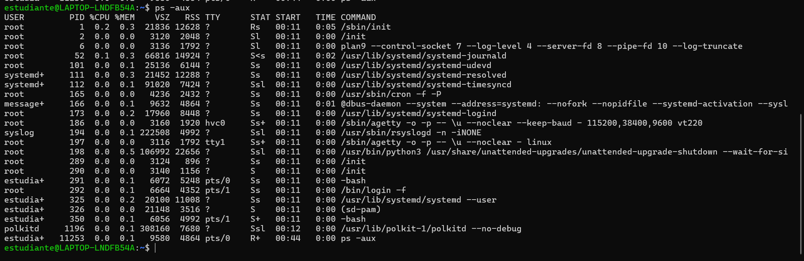
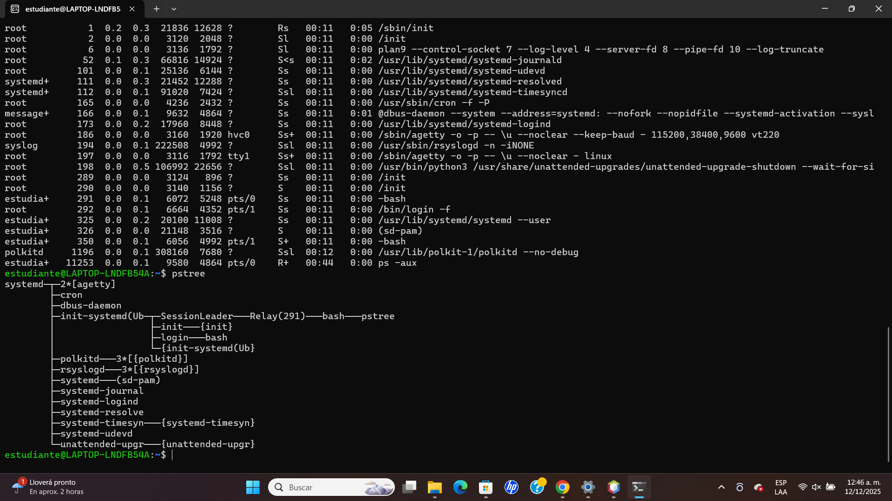

Actividad 3: Scripts y Procesos
3.1 Ejecución de Scripts
Evidencia del script funcionando:

3.2 Video: Explicación del Script
A continuación explico la lógica utilizada en el código:
3.3 Gestión de Procesos en Linux
En esta sección demuestro el monitoreo del sistema usando tres herramientas diferentes:

Comando TOP

Comando PS

Comando PSTREE
Video: Matando procesos (pkill)
Demostración de cómo finalizar un proceso específico: